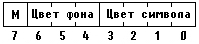

|
|
|
|
Вывод изображения
Заполнение области
Видимый элемент может быть частично или полностью перекрыт другими видимыми элементами. Turbo Vision позволяет располагать окна на экране в произвольном порядке, в том числе и накладывая их друг на друга. С помощью метода
Procedure GetClipRect(var R: TRect)
видимый элемент может получить координаты минимальной площади, которую он должен заполнить в данный момент. Обращение к GetClipRect обычно используется в методе Draw и позволяет до минимума сократить время обновления информации на экране.
Следует помнить, что в правильно построенной программе никакой другой видимый элемент не должен вторгаться в область владения данного элемента. Поэтому, если видимый элемент не заполнит всю выделенную ему область, этого за него не сделает никто другой, и незаполненная область окажется «замусоренной» предыдущим выводом в эту часть экрана.
Для вывода на экран не рекомендуется использовать стандартную процедуру Write (WriteLn), т.к. она заполняет только ту часть экрана, которая необходима для вывода, в то время как длина строки в видимом элементе может быть больше строки вывода. С другой стороны, эта процедура игнорирует границы видимого элемента и может «залезть» в чужую область.
Вывод в Turbo Vision основан на применении методов MoveChar, MoveStr и WriteLine. Все три метода используют переменную типа TDrawBuffer в качестве буфера видеопамяти. Метод MoveChar заполняет буфер нужным символом, например, пробелом или символом Char (#176) - этим символом заполняется фон панели экрана. Метод MoveStr переносит в буфер строку (подстроку), а метод WriteLine переносит буфер в видеопамять и таким образом осуществляет собственно вывод на экран.
Тип TDrawBuffer представляет собой массив слов:
type
TDrawBuffer = array [0..MaxViewWidth-1] of Word;
Константа MaxViewWidth определена в интерфейсной части модуля Views и устанавливает максимально возможную длину вывода (132 символа). Элементы массива задают двухбайтные последовательности, используемые в видеопамяти ПК для размещения кода выводимог/о символа (младший байт) и его атрибутов (старший байт). Байт атрибутов определяет цвет выводимого символа и цвет фона, а также содержит признак мерцания (рис. 17.1).

Рис. 17.1. Байт атрибутов видеопамяти
При обращении к методам MoveChar и MoveStr байт атрибутов задается в качестве одного из параметров обращения. Его можно получить с помощью функции GetColor, параметр обращения к которой определяет нужный номер элемента палитры.
|
|
|
|